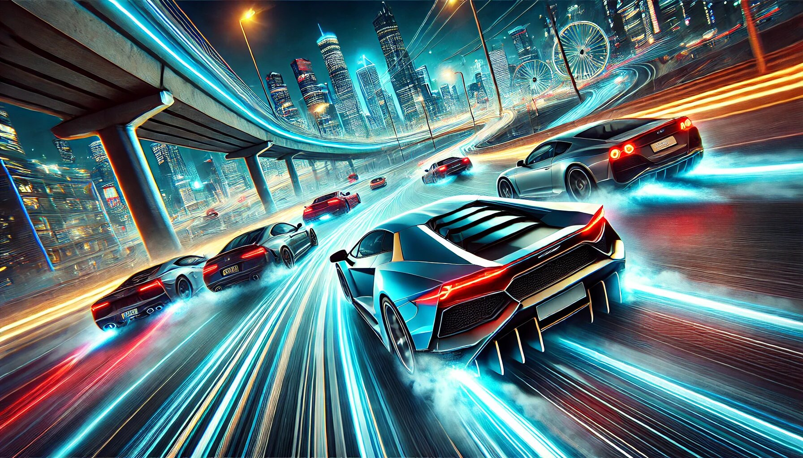

If you’ve ever dreamed of hitting the virtual road, mastering sharp turns, or simply enjoying the thrill of driving without leaving your couch, then Drive Zone Online is the game you’ve been waiting for. This online driving simulator has taken the gaming world by storm, offering an immersive and exhilarating experience that appeals to both casual gamers and hardcore driving enthusiasts. In this article, we’ll dive into the best features of Drive Zone Online, why it’s a must-play, and how it stands out in the crowded world of online games. Buckle up, because this is going to be a fun ride!
Drive Zone Online is a multiplayer driving game that combines realistic physics, stunning graphics, and a wide variety of cars and tracks to create an unforgettable gaming experience. Whether you’re a fan of high-speed races, drifting, or just cruising around, this game has something for everyone. It’s available on multiple platforms, including PC, iOS, and Android, making it accessible to a wide audience. The best part? You can play with friends or compete against players from around the world in real-time.
Drive Zone Online APK is a fantastic racing game that brings the thrill of high-speed action right to your fingertips! With stunning graphics, realistic car physics, and a wide variety of vehicles to choose from, this game keeps you hooked for hours. The controls are smooth and easy to master, making it perfect for both casual gamers and racing enthusiasts. Plus, the multiplayer mode lets you challenge friends or players worldwide, adding a fun competitive edge. Whether you're drifting through sharp turns or customizing your dream car, Drive Zone Online APK delivers endless entertainment—just don’t blame us if you start hearing engine revs in your sleep!
Let’s shift gears and explore the standout features that make Drive Zone Online a top choice for gamers everywhere.
One of the first things you’ll notice when playing Drive Zone Online is how realistic the driving feels. The game’s physics engine is designed to mimic real-world driving conditions, so every turn, drift, and acceleration feels authentic. Whether you’re navigating a tight corner or speeding down a straightaway, the controls are smooth and responsive. It’s like having a driving simulator in your pocket!
From sleek sports cars to rugged off-road vehicles, Drive Zone Online offers an impressive lineup of cars to choose from. Each vehicle is meticulously designed, with attention to detail that will make any car enthusiast drool. Want to drive a Lamborghini? No problem. Prefer a classic muscle car? They’ve got that too. The game regularly updates its car collection, so there’s always something new to try.
What’s better than driving a cool car? Driving a cool car that you’ve customized to your liking! Drive Zone Online lets you personalize your vehicles with a range of options, including paint colors, decals, and performance upgrades. Want a neon pink car with flames on the side? Go for it. Prefer a sleek, all-black look? That’s cool too. The customization options are endless, allowing you to create a car that truly reflects your style.
Boredom is not an option in Drive Zone Online. The game offers a variety of modes to keep you entertained, including:
Each mode offers a unique challenge, ensuring that there’s always something new to try.
Drive Zone Online is a visual treat. The game features high-quality graphics that bring the cars, tracks, and environments to life. Whether you’re racing through a bustling city or drifting on a scenic mountain road, the attention to detail is impressive. The lighting effects, weather conditions, and car designs all contribute to an immersive experience that will leave you in awe.
Driving is more fun with friends, and Drive Zone Online delivers on that front. The game’s multiplayer mode allows you to connect with players from around the world, compete in races, or simply cruise together. The social aspect adds a whole new layer of excitement, making every session unpredictable and enjoyable.
The developers of Drive Zone Online are constantly working to improve the game. Regular updates bring new cars, tracks, and features, ensuring that the game never gets stale. Whether it’s a new racing mode or a seasonal event, there’s always something to look forward to.
Navigating Drive Zone Online is a breeze, thanks to its intuitive interface. The menus are easy to understand, and the controls are straightforward, making it accessible to players of all skill levels. Even if you’re new to driving games, you’ll be able to jump in and start having fun right away.
One of the coolest features of Drive Zone Online is its cross-platform compatibility. Whether you’re playing on a PC, iPhone, or Android device, you can connect with friends and compete against players on other platforms. This flexibility makes it easy to enjoy the game no matter where you are or what device you’re using.
Yes, you read that right—Drive Zone Online is free to play! While there are in-game purchases available, you can enjoy the full experience without spending a dime. This makes it an excellent choice for gamers who want a high-quality driving game without breaking the bank.
With so many driving games available, what makes Drive Zone Online stand out from the crowd? Here are a few reasons:
Ready to hit the road? Here are a few tips to help you get started:
Drive Zone Online is more than just a game—it’s an experience. With its realistic driving physics, stunning graphics, and endless customization options, it’s no wonder that players around the world are hooked. Whether you’re a casual gamer looking for some fun or a driving enthusiast seeking a challenge, this game has something for you. So, what are you waiting for? Download Drive Zone Online today and start your engines!